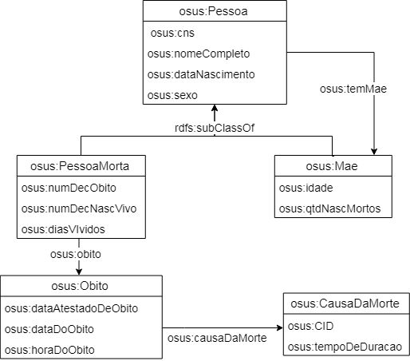
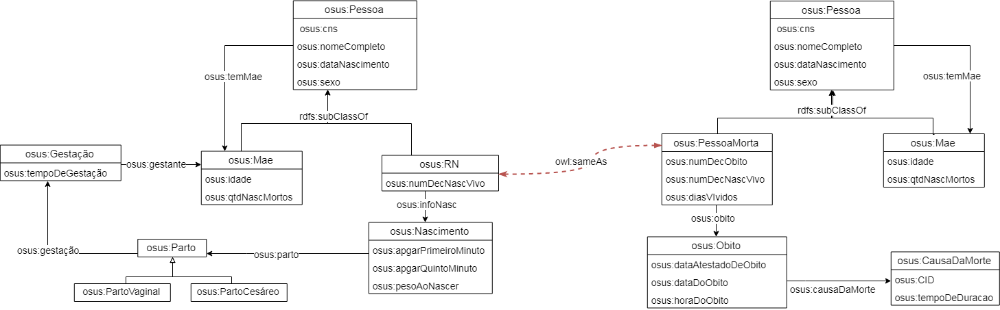

1. Bases Utilizadas
1.1 SIM
Sistema de Informações sobre Mortalidade
1.2 SINASC
Sistema de Informações sobre Nascidos Vivos
2. Ontologia de Dominio
Download ontologia em OWLRepresentação visual da ontologia de Dominio:

3.1 ESIM - Download Mapeamentos ESIM
Representação visual da Ontologia Local OSIM:
3.2 ESINASC - Download Mapeamentos ESINASC
Representação visual da Ontologia Local OSINASC:

4. Links Semânticos
Download Especificação SILKRepresentação visual dos links semânticos:
5. Fusão de Dados e Critérios de Qualidade